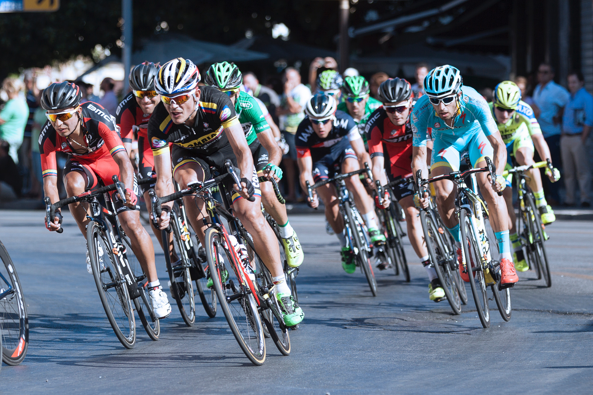

Collin Craig Memorial Series
The complete Collin Craig Memorial Series includes road, time trial, criterium, and mountain bike training events.
Frog Rock Approach
Bozeman, MT, United States
Difficulty: Medium
Distance: 2.14 miles
Climb: 616 ft
You begin with using mountain bikes to do the rideable section of the approach to Frog Rock - Chestnut Mountain trail to climbers spur trail. Make sure you pack climbing gear, if not we can help you purchase them at our local shop. We begin at the trailhead which is only has a few short steep sections in the first mile
Jackson Creek Hills Circuit Race
Bozeman, MT, United States
Difficulty: Hard
Distance: 2.82 miles
Climb: 10 ft
This is a very difficult and technical 2.82 circuit. There is significant elevation gain on a steep gradient each lap. Wind can be an issue sometimes, too. Creek surroundings are hilly contour mountains surroundings and road crosses over a rural area with many scenic views. The terrain is smooth but can become steep and difficult.
Prices for Tour
Tours/events are $25 for all. All participants must also be members of the Gallatin Valley Bicycle Club. Individual memberships are $10 and family memberships are $15.